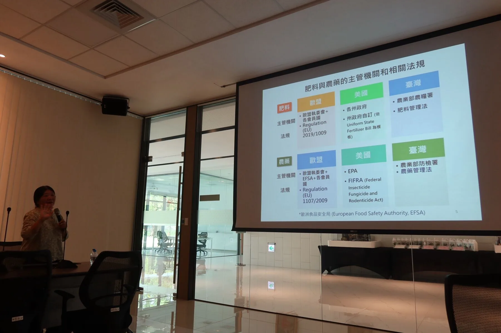

Taiwan is our development and validation environment. The main regulatory question for the cell-free output is whether its composition, function, and claims fit an existing fertilizer-related category.


On this page
ReLeaf is a three-part system: the bioreactor, the engineered production culture, and the cell-free agricultural output. We examined how each component is treated in Taiwan, the European Union, the United States, and potential Southeast Asian markets.
The same biological output may be treated as a fertilizer, plant biostimulant, or pesticide depending on its function, formulation, claims, and jurisdiction. We therefore used regulation as part of product design rather than as a final approval step. Our analysis focuses on classification, containment, efficacy, and market access, with Taiwan as the development environment and the EU as our current first international market to investigate.


ReLeaf is a three-part system: the bioreactor, the engineered production culture, and the cell-free agricultural output. We examined these components across Taiwan, the European Union, the United States, and potential Southeast Asian markets. The same biological output may be treated differently depending on its composition, intended function, claims, and jurisdiction. We therefore treated regulation as part of product design rather than a final approval step.
Our regulatory analysis follows:
Function → Claim → Classification → Requirement → Market Access
| Principle | Implications for ReLeaf |
|---|---|
| I - Regulation shapes design | Formulation, function, and claims influence the regulatory pathway |
| II - Separate the system | The bioreactor, engineered B. subtilis, and cell-free output raise different regulatory questions |
| III - Claims shape markets | Abiotic-stress positioning makes fertilizer/biostimulant pathways the main strategy under investigation |
Regulation is therefore not the final checkpoint of ReLeaf – it is one of the constraints that shape what we build, what we claim, and where we sell it.

ReLeaf does not enter the agricultural environment as one undifferentiated product:
| Component | Primary Question | ReLeaf’s Approach |
|---|---|---|
| Bioreactor | Does the equipment meet applicable safety and operating requirements? | Assesses pressure, electrical, fluid-contact, leak-prevention, cleanability, and other applicable equipment requirements |
| Engineered B. subtilis | How is the genetically engineered production organism contained? | Keeps the culture within the production system and separately assesses GMO/GMM transport, storage, and waste requirements |
| Cell-Free Output | How should the agricultural product be classified? | Evaluates its composition, function, claims, efficacy, and applicable fertilizer/biostimulant pathway. |
The hollow-fiber membrane forms part of this separation: it retains the production culture while allowing the intended soluble products to enter the product stream. The distinction connects biomanufacturing, biosafety, and regulation. Containment is not only an engineering requirement; it determines the exposure pathway that regulators must consider. Separating the engineered production organism from the cell-free agricultural output also allows the two components be assessed as distinct regulatory questions.
The first regulatory question is not simply “What molecule is this?” but “What is the product intended to do?”
The three molecules are treated as biostimulants in ReLeaf's biological design rather than as legally established biostimulants. Their intended functions are used to investigate whether a plant-biostimulant pathway could be appropriate for the final cell-free product. Because regulatory classification depends on the final formulation, claims, evidence, and jurisdiction, “Plant Biostimulant (PB)” below represents ReLeaf's current commercialization positioning rather than an approved legal classification.
| Biostimulant | Intended application | Current commercialization positioning |
|---|---|---|
| BoPEP4 | Salinity stress | Plant Biostimulant (PB) |
| AtLEA14 | Drought stress Salinity stress Osmotic stress | Plant Biostimulant (PB) |
| ACCD | Heat stress | Plant Biostimulant (PB) |
Our intended function is therefore abiotic-stress resilience rather than control of pathogens, insects, or weeds. The three biostimulants address complementary stress conditions: BoPEP4 is being investigated for salinity tolerance, AtLEA14 for drought and broader osmotic/abiotic-stress protection, and ACCD for heat-stress mitigation through reduction of stress-induced ethylene. These positions represent ReLeaf's current commercialization strategy, not a final legal classification by any regulatory authority.
Regulation (EU) 2019/1009 defines PFC 6 plant biostimulants around improving characteristics including tolerance to abiotic stress. PFC 6(B) covers non-microbial plant biostimulants. This makes PFC 6(B) a potential pathway for ReLeaf's cell-free output, but not an automatic classification. ReLeaf's current biostimulants are being investigated for complementary abiotic-stress functions: BoPEP4 for salinity tolerance, AtLEA14 for drought, salinity, and osmotic-stress protection, and ACCD for heat-stress mitigation through reduction of stress-induced ethylene. The final product must also satisfy applicable composition, safety, efficacy, labeling, and conformity requirements.
Taiwan
Taiwan is our development and validation environment. The main regulatory question for the cell-free output is whether its composition, function, and claims fit an existing fertilizer-related category.
Taiwan's fertilizer specifications recognize 植物生長輔助劑類 (Plant Growth Auxiliary Materials) among its fertilizer categories. However, this does not establish that ReLeaf's protein- or peptide-based formulation automatically belongs in that category. The final formulation and claims would need to be characterized and confirmed with the Ministry of Agriculture.
If registered as a fertilizer, ReLeaf would need to establish a defined and reproducible product composition, relevant safety and quality characteristics, efficacy, labeling, and registration information.
Because some plant-physiological claims can fall within pesticide-related regulation, ReLeaf will avoid claims concerning the control of pathogens, insects, or weeds. Our intended positioning remains focused on abiotic-stress resilience, with BoPEP4 targeting salinity tolerance, AtLEA14 addressing drought and osmotic stress, and ACCD extending the system to heat-stress mitigation. This does not guarantee fertilizer or biostimulant classification. Final classification remains the responsibility of the competent authority.
The engineered B. subtilis is assessed separately from the cell-free output. Our current review did not identify a general Taiwan contained-use GMO framework that clearly resolves this specific engineered bacterial production scenario.
We therefore treat its regulatory status as unconfirmed. Before commercial deployment, ReLeaf would seek regulatory consultation concerning the production strain, contained use, transport, and waste handling.
The bioreactor is an equipment rather than the agricultural product itself. Its requirements depend on the final hardware configuration, including electrical systems, pumps, pressure-bearing components, sensors, and fluid-contact materials. The final commercial design would therefore require a separate equipment-safety and conformity assessment.
European Union
The EU provides a clear framework to investigate ReLeaf's intended function. Under Regulation (EU) 2019/1009, PFC 6 covers plant biostimulants, including non-microbial PFC 6(B). The regulation explicitly includes improvement of tolerance to abiotic stress within the plant-biostimulant function.

PFC 6(B) → CMC Eligibility → Efficacy & Safety → Conformity Assessment → Market Access
Product Function Category (PFC) classification answers what the product does. Component Material Categories (CMCs), on the other hand, answer what materials the EU fertilizing product may contain. An EU fertilizing product must consist only of materials meeting an applicable CMC. This creates two separate questions for ReLeaf:
| Question | ReLeaf Consideration |
|---|---|
| What does the product do? | Improve tolerance to abiotic stress → potential PFC 6(B) |
| What is the product made from? | Cell-free proteins/peptides → CMC eligibility must be established |
| Does it work? | Claims must be supported by efficacy evidence |
| Is it safe and consistent? | Composition, contaminants, stability, and quality require assessment |
| Can it enter the EU market? | Applicable conformity assessment must be completed |
The EU framework therefore creates a direct feedback loop between our wetlab work and regulatory strategy. The intended claim determines the evidence we need to generate: salinity-tolerance evidence for BoPEP4, drought or osmotic-stress protection evidence for AtLEA14, and heat-stress mitigation evidence for ACCD. These experimental results would support the biological rationale for the corresponding claims, but would not by themselves determine the final regulatory classification.
The bioreactor and engineered production culture remain separate from the cell-free fertilizing product. Their applicable equipment and contained-biotechnology requirements must be assessed according to the final design and production system.
United States
The United States differs from the EU because agricultural-input requirements can involve both federal and state authorities. For ReLeaf, the main question remain:
ReLeaf therefore cannot transfer an EU classification directly to the United States.
![A flow diagram for the United States. The bioreactor leads to equipment and product safety; the liquid culture leads to USDA-APHIS 7 CFR 340, import and interstate movement, and APHIS review; the protectants lead to intended use, which splits into abiotic stress claims going to state fertilizer or biostimulant registration and pest or regulator claims going to EPA FIFRA registration. All branches meet at commercialization, which splits into federal requirements (USDA, EPA, FDA) and state requirements varying by state.](../assets/img/laws-and-regulations/us-component-breakdown.webp)
Our intended positioning remains abiotic-stress resilience rather than pest control. Depending on the final formulation, claims, and target state, the product may require assessment under fertilizer, beneficial-substance, plant-regulator, or other applicable frameworks.
For the contained engineered microorganism, the Environmental Protection Agency (EPA)’s Toxic Substances Control Act (TSCA) biotechnology framework under ‘Title 40 of the Code of Federal Regulations Part 725’ (40 C.F.R. Part 725) is a principal federal framework to investigate. Whether the final ReLeaf strain qualifies for an exemption or requires notification/review must be determined from the final strain and containment conditions.
The bioreactor requires a separate equipment-safety assessment based on its final electrical, mechanical, pressure, and installation characteristics.
| European Union | United States | |
|---|---|---|
| Main Regulatory Structure | Harmonized EU fertilizing-products framework | Federal agencies + state requirements |
| Plant Biostimulants | PFC 6 under Regulation (EU) 2019/1009 | No single harmonized federal biostimulant pathway |
| Product Claims | Important for PFC classification | Important for determining regulatory jurisdiction |
| Fertilizer Requirements | EU-wide harmonized framework for CE-marked products | Primarily state-specific |
| Engineered Microorganisms | Separate assessments from final product | Product- and use-specific federal jurisdiction |
| Market Strategy | EU-level harmonized pathway | Select target states individually |
After Taiwan and the EU, ReLeaf would investigate selected Southeast Asian markets rather than entering the region simultaneously.

| Priority | Market | Agricultural/Market Relevance | Fertilizer/Biostimulant Pathway | Regulatory Situation for ReLeaf |
|---|---|---|---|---|
| 1 | Taiwan | Strong relevance as our development and validation environment | Established fertilizer-registration framework under the Fertilizer Management Act | Product classification still needs confirmation because ReLeaf is a protein/peptide-based, cell-free product; contained engineered culture requires separate assessment |
| 2 | Philippines | Strong agricultural relevance and established agricultural input market | Dedicated Fertilizer and Pesticide Authority (FPA) with fertilizer product registration and licensed-handler systems | Clear institutional pathway, but ReLeaf's exact product category and biotechnology requirements would still need confirmation |
| 3 | Vietnam | Strong agricultural relevance, particularly for crop production affected by environmental stress | National fertilizer-management framework under the Crop Production Law and Decree 84/2019/ND-CP | Defined fertilizer system, but exact classification of a cell-free protein/peptide product requires investigation |
| 4 | Thailand | Large and diverse agricultural sector | Fertilizer Act framework explicitly covers biological fertilizer production, importation, sale, and licensing | Established fertilizer framework, but product classification and GMO/biotechnology issues remain separate questions |
| 5 | Indonesia | Very large agricultural market and strategically important regional market | National fertilizer framework with registration, quality, and distribution requirements | Important but more complex to evaluate because the agricultural-input regulatory framework has recently been updated; PP No. 7/2026 is now in force |
| 6 | Malaysia | Significant commercial agriculture and relatively developed regulatory institutions | Fertilizer inputs are subject to agricultural and product-control requirements, but the exact route for ReLeaf’s formulation requires further investigation | Smaller uncertainty than some emerging markets, but less directly aligned with our current regulatory research than the priority markets above |
| 7 | Cambodia | Agriculture is economically important and fertilizer use is significant | Law on the Management of Pesticides and Fertilizers provides registration requirements for fertilizers | Defined fertilizer registration system, including requirements for research data and composition; additional GMO/biological-product questions remain |
| 8 | Laos | Agriculture is important particularly for crop production | A new Decree on Fertilizer No. 123/GoV was issued in May 2026 and establishes registration, import, inspection, labelling, and quality requirements | Framework is now clearer, but the regulatory system is newer and the market is smaller |
| 9 | Myanmar | Large agricultural sector | Fertilizer regulation exists, but current market and regulatory conditions require further investigation | Political, commercial, and regulatory uncertainty would increase the difficulty of early entry |
| 10 | Singapore | Highly developed regulatory environment but limited agricultural production | Agricultural-input regulation exists, but the domestic crop-production market is comparatively limited; pesticide/biostimulant claims can fall within SFA regulation | High regulatory capacity but limited fit with ReLeaf's target agricultural market |
| 11 | Brunei | Small agricultural market | Agricultural inputs are administered through the Department of Agriculture and Agrifood | Limited market scale makes it less attractive for early commercialization despite manageable institutional structure |
Our intended sequence is therefore:
Taiwan → European Union → Philippines → Vietnam → Thailand → Indonesia → Secondary ASEAN Markets
This sequence is based on regulatory fit and development readiness rather than market size alone.
Kelpak provides a useful case study for understanding why ReLeaf cannot assume that one regulatory classification will apply globally. Kelpak is a seaweed-derived agricultural biostimulant whose regulatory treatment differs across markets, even though the underlying product remains substantially the same. This makes it particularly relevant to ReLeaf, where the same cell-free protectant output may encounter different legal definitions, registration requirements, and evidence standards depending on the destination market.
| Market | Regulatory Treatment of Kelpak | What This Demonstrates |
|---|---|---|
| European Union | CE-marked EU fertilizing product | Harmonized plant-biostimulant framework |
| Taiwan | Registered fertilizer product | National fertilizer classification |
| United States | Agricultural input with organic-input approval; requirements can also depend on state | Decentralized regulatory system |
In the European Union, Kelpak is positioned within the EU fertilising-products framework, demonstrating how a harmonized regional system can provide a defined pathway for plant-biostimulant products. In Taiwan, its registration as a fertilizer illustrates how the same type of agricultural input can instead be evaluated through a national fertilizer classification system. In the United States, Kelpak's market position demonstrates the more decentralized nature of agricultural-input regulation, where federal considerations, organic-input requirements, and individual state requirements can all affect market access.
The contrast is important for ReLeaf because regulatory classification depends not only on the biological material itself, but also on its formulation, intended function, claims, and jurisdiction. Kelpak therefore serves as the main regulatory case study for our project: the product does not change simply because it crosses a border, but the regulatory pathway governing that product can change substantially. ReLeaf consequently treats each target market as a separate regulatory assessment rather than assuming that approval or classification in one jurisdiction automatically transfers to another.
Sagarika illustrates a second regulatory issue: agricultural-input categories can evolve as new technologies become more established and governments develop more specific regulatory frameworks. Developed by IFFCO, Sagarika is a microbial biostimulant whose regulatory history in India reflects the emergence of more defined requirements for biostimulant products under the Fertilizer Control Order (FCO). Its development therefore demonstrates how regulatory uncertainty around newer agricultural products can decrease as governments establish clearer definitions, registration procedures, and evidence requirements. For ReLeaf, this highlights the importance of defining product identity, composition, efficacy, safety, traceability, and containment early rather than waiting for a regulatory pathway to be fully established. Sagarika therefore complements the Kelpak case: while Kelpak demonstrates that the same product can face different regulatory pathways across markets, Sagarika demonstrates that the regulatory pathway for an emerging product category can itself develop over time.
For ReLeaf, this reinforces the importance of establishing product identity, composition, efficacy, safety, traceability, and containment early.
Our exchange with Cheng Han Biotechnology supplemented our legal research with industry experience from Taiwan, the EU, and the US. This discussion reinforced three practical considerations:
We used this discussion as an industrial perspective rather than as a substitute for official regulatory requirements.
| Component / Positioning | Potential Regulatory Pathway | Why It Could Apply To ReLeaf | Current ReLeaf Position |
|---|---|---|---|
| Cell-free biostimulant output | Fertilizer/Plant Biostimulant | The intended function is to improve tolerance to abiotic stress rather than control pests or pathogens. BoPEP4, AtLEA14, and ACCD are being developed to address complementary abiotic stresses. In the EU, PFC 6 includes abiotic-stress tolerance as a plant-biostimulant function. | Primary pathway under investigation. Exact composition, CMC eligibility, efficacy, and conformity requirements remain to be confirmed. |
| Engineered Bacillus subtilis culture | Contained-Use / Biotechnology Framework | The engineered microorganism is the production chassis rather than the agricultural product. Its regulatory status must be assessed separately, including manufacture, transport, storage, containment, and waste. | Separate regulatory question. ReLeaf does not intend to apply the engineered culture directly to crops. |
| Bioreactor | Equipment, Machinery, Electrical, and Potentially Pressure-Related Requirements | The bioreactor contains pumps, sensors, fluid-handling components, electrical equipment, and a hollow-fiber membrane system. | Separate equipment pathway. Requirements depend on the final commercial hardware and target jurisdiction. |
| Direct Application of Engineered Bacteria to Crops | GMO / Environmental-Release and Agricultural Input Regulation | Direct application would create substantially different questions concerning environmental exposure and release of the engineered microorganism. | Not the ReLeaf model. The engineered culture remains contained while the agricultural output is cell-free. |
| Organic-Agriculture Positioning | Organic Input Requirements | Organic production standards may restrict genetically modified organisms and certain inputs. | Not an initial positioning target. ReLeaf's commercial model retains the engineered production organism within the bioreactor. |
The three components therefore form one manufacturing system but do not necessarily share one regulatory identity.
| Issue | Current Status |
|---|---|
| Taiwan - cell-free output | Exact fertilizer category still requires authority confirmation |
| Taiwan - engineered culture | Applicable contained-use framework remains unconfirmed |
| EU - PFC 6(B) | Potential pathway; not an automatic classification |
| EU - CMC | Eligibility of each ReLeaf protein/peptide remains to be established |
| US - engineered culture | Final TSCA Part 725 pathway remains to be determined |
| US - cell-free output | Target-state requirements remain open |
| Efficacy | Commercial claims require ReLeaf's own supporting data: salinity tolerance for BoPEP4, drought/salinity/osmotic-stress protection for AtLEA14, and heat-stress mitigation through ACCD |
| Bioreactor | Final equipment/conformity pathways depend on commercial design. |
ReLeaf’s regulatory strategy can therefore be reduced to five questions:
Regulation has therefore become part of ReLeaf's development process. Our goal is not simply to identify a legal category after the product is built, but to develop the production system, containment strategy, scientific evidence, product claims, and market pathway together.